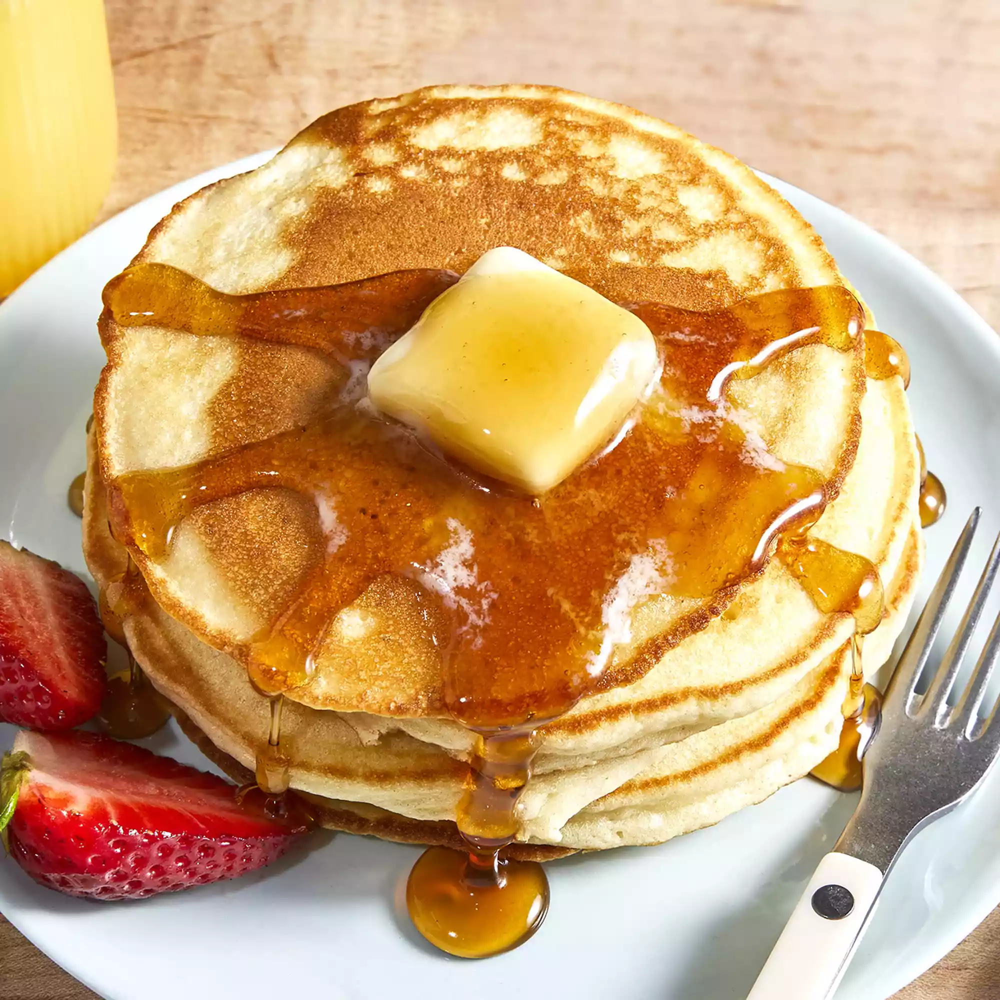

Home
Easy Pancakes!

An easy to make recipe that also tastes great!
Ingredients
- 1 cup all-purpose flour
- 2 tablespoons white sugar
- 2 teaspoons baking powder
- 1 teaspoon salt
- 1 egg beaten
- 1 cup milk
- 2 tablespoons vegetable oil
Steps
- In a large bowl, mix flour, sugar, baking powder and salt. Make a well in the center, and pour in milk, egg and oil. Mix until smooth.
- Heat a lightly oiled griddle or frying pan over medium high heat. Pour or scoop the batter onto the griddle, using approximately 1/4 cup for each pancake. Brown on both sides and serve hot.
- Enjoy your breakfast!
Nutrition Facts
- Calories: 247
- Fat: 10g
- Carbs: 34g
- Protein: 7g